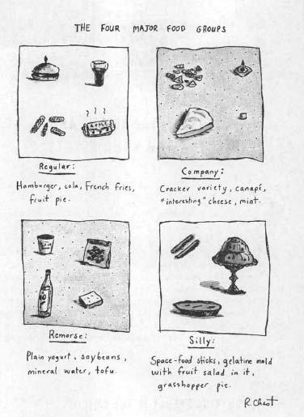
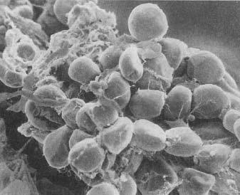

So you’re sprinting down the street with the lion after you. Things looked grim for a moment there, but—your good luck—your cardiovascular system kicked into gear, and now it is delivering oxygen and energy to your exercising muscles. But what energy? There’s not enough time to consume a candy bar and derive its benefits as you sprint along; there’s not even enough time to digest food already in the gut. Your body must get energy from its places of storage, like fat or liver or non-exercising muscle. To understand how you mobilize energy in this circumstance, and how that mobilization can make you sick at times, we need to learn how the body stores energy in the first place.
So you’re sprinting down the street with the lion after you. Things looked grim for a moment there, but—your good luck—your cardiovascular system kicked into gear, and now it is delivering oxygen and energy to your exercising muscles. But what energy? There’s not enough time to consume a candy bar and derive its benefits as you sprint along; there’s not even enough time to digest food already in the gut. Your body must get energy from its places of storage, like fat or liver or non-exercising muscle. To understand how you mobilize energy in this circumstance, and how that mobilization can make you sick at times, we need to learn how the body stores energy in the first place.
Putting Energy in the Bank

The basic process of digestion consists of breaking down chunks of animals and vegetables so that they can then be transformed into chunks of human. We can’t make use of the chunks exactly as they are; we can’t, for example, make our leg muscles stronger by grafting on the piece of chicken muscle we ate. Instead, complex food matter is broken down into its simplest parts (molecules): amino acids (the building blocks of protein), simple sugars like glucose (the building blocks of more complex sugars and of starches [carbohydrates]), and free fatty acids and glycerol (the constituents of fat). This is accomplished in the gastrointestinal tract by enzymes, chemicals that can degrade more complex molecules. The simple building blocks thus produced are absorbed into the bloodstream for delivery to whichever cells in the body need them. Once you’ve done that, the cells have the ability to use those building blocks to construct the proteins, fats, and carbohydrates needed to stay in business. And just as important, those simple building blocks (especially the fatty acids and sugars) can also be burned by the body to provide the energy to do all that construction and to operate those new structures afterward.
It’s Thanksgiving, and you’ve eaten with porcine abandon. Your bloodstream is teeming with amino acids, fatty acids, glucose. It’s far more than you need to power you over to the couch in a postprandial daze. What does your body do with the excess? This is crucial to understand because, basically, the process gets reversed when you’re later sprinting for your life.
To answer this question, it’s time we talked finances, the works—savings accounts, change for a dollar, stocks and bonds, negative amortization of interest rates, shaking coins out of piggy banks—because the process of transporting energy through the body bears some striking similarities to the movement of money. It is rare today for the grotesquely wealthy to walk around with their fortunes in their pockets, or to hoard their wealth as cash stuffed inside mattresses. Instead, surplus wealth is stored elsewhere, in forms more complex than cash: mutual funds, tax-free government bonds, Swiss bank accounts. In the same way, surplus energy is not kept in the body’s form of cash—circulating amino acids, glucose, and fatty acids—but stored in more complex forms. Enzymes in fat cells can combine fatty acids and glycerol to form triglycerides (table). Accumulate enough of these in the fat cells and you grow plump. Meanwhile, your cells can stick series of glucose molecules together. These long chains, sometimes thousands of glucose molecules long, are called glycogen. Most glycogen formation occurs in your muscles and liver. Similarly, enzymes in cells throughout the body can combine long strings of amino acids, forming them into proteins.
The hormone that stimulates the transport and storage of these building blocks into target cells is insulin. Insulin is this optimistic hormone that plans for your metabolic future. Eat a huge meal and insulin pours out of the pancreas into the bloodstream, stimulating the transport of fatty acids into fat cells, stimulating glycogen and protein synthesis. It’s insulin that’s filling out the deposit slips at your fat banks. We even secrete insulin when we are about to fill our bloodstream with all those nutritive building blocks: if you eat dinner each day at six o’clock, by five forty-five you’re already secreting insulin in anticipation of the rising glucose levels in your bloodstream. Logically, it is the parasympathetic nervous system that stimulates the anticipatory secretion, and this ability to secrete insulin in preparation for the glucose levels that are about to rise is a great example of the anticipatory quality of allostatic balance.
Emptying the Bank Account:
Energy Mobilization During a Stressor
This grand strategy of breaking your food down into its simplest parts and reconverting it into complex storage forms is precisely what your body should do when you’ve eaten plenty. And it is precisely what your body should not do in the face of an immediate physical emergency. Then, you want to stop energy storage. Turn up the activity of the sympathetic nervous system, turn down the parasympathetic, and down goes insulin secretion: step one in meeting an emergency accomplished.
The body makes sure that energy storage is stopped in a second way as well. With the onset of the stressful emergency, you secrete glucocorticoids, which block the transport of nutrients into fat cells. This counteracts the effects of any insulin still floating around.
So you’ve made sure you don’t do anything as irrational as store away new energy at this time. But in addition, you want your body to gain access to the energy already stored. You want to dip into your bank account, liquidate some of your assets, turn stored nutrients into your body’s equivalent of cash to get you through this crisis. Your body reverses all of the storage steps through the release of the stress hormones glucocorticoids, glucagon, epinephrine, and norepinephrine. These cause triglycerides to be broken down in the fat cells and, as a result, free fatty acids and glycerol pour into the circulatory system. The same hormones trigger the degradation of glycogen to glucose in cells throughout the body, and the glucose is then flushed into the bloodstream. These hormones also cause protein in non-exercising muscle to be converted back to individual amino acids.
The stored nutrients have now been converted into simpler forms. Your body makes another simplifying move. Amino acids are not a very good source of energy, but glucose is. Your body shunts the circulating amino acids to the liver, where they are converted to glucose. The liver can also generate new glucose, a process called gluconeogenesis, and this glucose is now readily available for energy during the disaster.
As a result of these processes, lots of energy is available to your leg muscles. There’s a burst of activity; you leave the lion in the dust and arrive at the restaurant only a smidgen late for your five forty-five anticipatory insulin secretion.
The scenario I’ve been outlining is basically a strategy to shunt energy from storage sites like fat to muscle during an emergency. But it doesn’t make adaptive sense to automatically fuel, say, your arm muscles while you’re running away from a predator if you happen to be an upright human. It turns out that the body has solved this problem. Glucocorticoids and the other hormones of the stress-response also act to block energy uptake into muscles and into fat tissue. Somehow the individual muscles that are exercising during the emergency have a means to override this blockade and to grab all the nutrients floating around in the circulation. The net result is that you shunt energy from fat and from non-exercising muscle to the exercising ones.
And what if you can’t mobilize energy during a crisis? This is what occurs in Addison’s disease, where people cannot secrete adequate amounts of glucocorticoids, or in Shy-Drager syndrome, where it is epinephrine and norepinephrine that are inadequate, having an inability to mobilize the body during energetic demands. Obviously, the lion is more likely to feast. And in a more subtle scenario, if you live in a westernized society and tend to have a somewhat underactive stress-response? Just as obviously, you’ll have trouble mobilizing energy in response to the demands of daily life. And that is precisely what is seen in individuals with chronic fatigue syndrome, which is characterized by, among other things, too low levels of glucocorticoids in the bloodstream.
So Why Do We Get Sick?
You most definitely want to have a metabolic stress-response if you’re evading a lion, and even if you are doing anything as taxing as walking up a flight of stairs (or even getting up in the morning, the time of day when our glucocorticoid levels normally peak). But what about the more typical scenario for us, one of turning on the stress-response too often, for months on end? We get into metabolic trouble for many of the same reasons that constantly running to the bank and drawing on your account is a foolish way to handle your finances.
On the most basic level, it’s inefficient. Another financial metaphor helps. Suppose you have some extra money and decide to put it away for a while in a high-interest account. If you agree not to touch the money for a certain period (six months, two years, whatever), the bank agrees to give you a higher-than-normal rate of interest. And, typically, if you request the money earlier, you will pay a penalty for the early withdrawal. Suppose, then, that you happily deposit your money on these terms. The next day you develop the financial jitters, withdraw your money, and pay the penalty. The day after, you change your mind again, put the money back in, and sign a new agreement, only to change your mind again that afternoon, withdraw the money, and pay another penalty. Soon you’ve squandered half your money on penalties.
In the same way, every time you store energy away from the circulation and then return it, you lose a fair chunk of the potential energy. It takes energy to shuttle those nutrients in and out of the bloodstream, to power the enzymes that glue them together (into proteins, triglycerides, and glycogen) and the other enzymes that then break them apart, to fuel the liver during that gluconeogenesis trick. In effect, you are penalized if you activate the stress-response too often: you wind up expending so much energy that, as a first consequence, you tire more readily—just plain old everyday fatigue.
As a second consequence, your muscles can waste away, although this rarely happens to a significant degree. Muscle is chock-full of proteins. If you are stressed chronically, constantly triggering the breakdown of proteins, your muscles never get the chance to rebuild. While they atrophy ever so slightly each time your body activates this component of the stress-response, it requires a really extraordinary amount of stress for this to happen to a serious extent. As we will see in later chapters, sometimes clinicians give patients massive doses of synthetic glucocorticoids. In this scenario, significant amounts of myopathy—atrophy of muscle—can occur, of a type similar to that seen in people who are bedridden for long periods.
Finally, another problem with constantly mobilizing the metabolic stress-response was hinted at in the last chapter. You don’t want to have tons of fat and glucose perpetually circulating in your bloodstream because, as we saw, that increases the chances of the stuff glomming on to some damaged blood vessel and worsening atherosclerosis. Cholesterol also plays into this. As is well understood, there is “bad” cholesterol, also known as low-density lipoprotein-associated cholesterol (LDL) and “good” cholesterol (high-density lipoprotein-associated cholesterol, HDL). LDL-cholesterol is the type that gets added to an atherosclerotic plaque, whereas HDL-cholesterol is cholesterol that has been removed from plaques and is on its way to be degraded in the liver. As a result of this distinction, your total level of cholesterol in the bloodstream is not actually a meaningful number. You want to know how much of each type you have, and lots of LDL and minimal HDL are independently bad news. We saw in the last chapter that the amount of vascular inflammation, as measured by CRP levels, is the best predictor out there of cardiovascular disease risk. Nonetheless, you don’t want to have tons of LDL-cholesterol floating around and not enough HDL to counteract it. And during stress, you increase LDL-cholesterol levels and decrease HDL.*
Therefore, if you are stressed too often, the metabolic features of the stress-response can increase your risks of cardiovascular disease. This becomes particularly relevant with diabetes.
Juvenile Diabetes
There are multiple forms of diabetes, and two are relevant to this chapter. The first is known as juvenile diabetes (or type 1, insulin-dependent diabetes). For reasons that are just being sorted out, in some people the immune system decides that the cells in the pancreas that secrete insulin are, in fact, foreign invaders and attacks them (such “autoimmune” diseases will be discussed in chapter 8). This destroys those cells, leaving the person with little ability to secrete insulin. For equally mysterious reasons, this tends to hit people relatively early in life (hence the “juvenile” part of the name) although, to add to the mystery, in recent decades, the rate at which adults, even middle-aged adults, are getting diagnosed with juvenile diabetes is climbing.
Because the person can no longer secrete adequate amounts of insulin (if any), there is little ability to promote the uptake of glucose (and, indirectly, fatty acids) into target cells. Cells starve—big trouble, not enough energy, organs don’t function right. In addition, there’s now all that glucose and fatty acid circulating in the bloodstream—oleaginous hoodlums with no place to go, and soon there’s atherosclerotic trouble there as well. The circulating stuff gums up the blood vessels in the kidneys, causing them to fail. The same can occur in the eyes, causing blindness. Blood vessels elsewhere in the body are clogged, causing little strokes in those tissues and, often, chronic pain. With enough glucose in the circulation, it begins to stick to proteins, begins to Velcro proteins together that have no business being connected, knocking them out of business. None of this good.
And what is the best way to manage insulin-dependent diabetes? As we all know, by accommodating that dependency with insulin injections. If you’re diabetic, you never want your insulin levels to get too low—cells are deprived of energy, circulating glucose levels get too high. But you don’t want to take too much insulin. For complex reasons, this deprives the brain of energy, potentially putting you into shock or a coma and damaging neurons. The better the metabolic control in a diabetic, the fewer the complications and the longer the life expectancy. Thus, there’s a major task for this type of diabetic to keep things just right, to keep food intake and insulin dosages balanced with respect to activity, fatigue, and so on. And this is an area where there has been extraordinary technological progress enabling diabetics to monitor blood glucose levels minute by minute and make minuscule changes in insulin dosages accordingly.
How does chronic stress affect this process? First, the hormones of the stress-response cause even more glucose and fatty acids to be mobilized into the bloodstream. For a juvenile diabetic, this increases the likelihood of the now-familiar pathologies of glucose and fatty acids gumming up in the wrong places.
Another, more subtle problem occurs with chronic stress as well. When something stressful happens, you don’t just block insulin secretion. Basically, the brain doesn’t quite trust the pancreas not to keep secreting a little insulin, so a second step occurs. As noted earlier, during stress, glucocorticoids act on fat cells throughout the body to make them less sensitive to insulin, just in case there’s some still floating around. Fat cells then release some newly discovered hormones that get other tissues, like muscle and liver, to stop responding to insulin as well. Stress promotes insulin resistance. (And when people get into this diabetic state because they are taking large amounts of synthetic glucocorticoids [to control any of a variety of diseases that will be discussed later in the book] they have succumbed to “steroid diabetes.”)
Why is this stress-induced insulin resistance bad for someone with juvenile diabetes? They have everything nice and balanced, with a healthy diet, a good sensitivity to their body’s signals as to when a little insulin needs to be injected, and so on. But throw in some chronic stress, and suddenly insulin doesn’t work quite as well, causing people to feel terrible until they figure out that they need to inject more of the stuff…which can make cells even more resistant to insulin, spiraling the insulin requirements upward…until the period of stress is over with, at which point it’s not clear when to start getting the insulin dose down…because different parts of the body regain their insulin sensitivity at different rates…. The perfectly balanced system is completely upended.
Stress, including psychological stress, can wreak havoc with metabolic control in a juvenile diabetic. In one demonstration of this, diabetics were exposed to an experimental stressor (speaking in public) and their glucocorticoid secretion was monitored. Those who tended to have the largest stress-response under those circumstances were the ones least likely to have their diabetes well controlled. Moreover, in related studies, those who had the strongest emotional reactions to an experimental stressor tended to have the highest blood glucose levels.
Stress may sneak in another way. Some careful studies have shown higher rates of major stressors suffered by people during the three years before the onset of their juvenile diabetes than would be expected by chance. Does this mean that stress can make the immune system more likely to attack the pancreas? There is a little bit of evidence for this, which will be discussed in chapter 8 on immunity. A more likely explanation is built around the fact that once the immune system begins to attack the pancreas (that is, once the diabetes has started), it takes a while before the symptoms become apparent. By having all the adverse effects just talked about, stress can speed up the whole process, making the person notice sooner that he or she is just not feeling right.
Thus, frequent stress and/or big stress-responses might increase the odds of getting juvenile diabetes, accelerate the development of the diabetes, and, once it is established, cause major complications in this life-shortening disease.* Therefore, this is a population in which successful stress management is critical.
Adult-Onset Diabetes
In adult-onset diabetes (type 2, non-insulin-dependent diabetes), the trouble is not too little insulin, but the failure of the cells to respond to insulin. Another name for the disorder is thus insulin-resistant diabetes. The problem here arises with the tendency of many people to put on weight as they age. (However, if people do not put on weight as they age, they show no increased risk of this disease. This is the case among people in non-westernized populations. The disease is not, therefore, a normal feature of aging; instead, it is a disease of inactivity and fat surplus, conditions that just happen to be more common with age in some societies.) With enough fat stored away, the fat cells essentially get full; once you are an adolescent, the number of fat cells you have is fixed, so if you put on weight, the individual fat cells are distended. Yet another heavy meal, a burst of insulin trying to promote more fat storage by the fat cells, and the fat cells refuse—“Tough luck, I don’t care if you are insulin; we’re completely full.” No room at the inn. The fat cells become less responsive to insulin trying to promote more fat storage, and less glucose is taken up by these cells.* The overstuffed fat cells even release hormones that trigger other fat cells and muscle into becoming insulin resistant.
Do the cells now starve? Of course not, the abundant amounts of fat stored in them was the source of the trouble in the first place. The body gets into trouble because of all that circulating glucose and fatty acids, damaging blood vessels. Same old problem. And if the adult-onset diabetes goes on for a while, an additional, miserable development can occur. Your body has become insulin-resistant. Your pancreas responds by secreting even more insulin than usual. You’re still resistant. So the pancreas secretes even more. Back and forth, your pancreas pumping out ever higher levels of insulin, trying to be heard. Eventually, this burns out the insulin-secreting cells in the pancreas, actually destroying them. So you finally get your adult-onset diabetes under control, thanks to losing weight and exercising, and you discover you’ve now got juvenile diabetes, thanks to that damage to your pancreas.

Photomicrograph of bloated fat cells.
How does chronic stress affect adult-onset diabetes? Once again, constantly mobilizing glucose and fatty acids into the bloodstream adds to the atherosclerotic glomming. And there’s that problem of the stress-response involving your fat cells being instructed to become less responsive to insulin. Suppose that you’re in your sixties, overweight, and just on the edge of insulin resistance. Along comes a period of chronic stress with those stress hormones repeatedly telling your cells what a great idea it is to be insulin-resistant. Enough of this and you pass the threshold for becoming overtly diabetic.
Why is any of this worth paying attention to? Because there is a worldwide epidemic of adult-onset diabetes going on, especially in our country. As of 1990, about 15 percent of Americans over age sixty-five had adult-onset diabetes. That was considered a health disaster then. As of a decade later, there’s been a 33 percent increase above that, and among middle-aged adults as well. And this disease of aging is suddenly hitting far younger people as well—in the last decade, there’s been a 70 percent increase in its incidence among thirty-year-olds. In addition, something like 20 million Americans are “pre-diabetic”—barreling toward a formal diagnosis. Adult-onset diabetes has even become more prevalent among kids than juvenile diabetes, which is pretty horrifying. Moreover, as people in the developing world are first being exposed to westernized diets, not only do they develop diabetes, they develop it at a faster rate than do westerners, for reasons that are probably both cultural and genetic. This once nonexistent disease afflicts an estimated 300 million people worldwide and killed 200,000 Americans last year.
What’s this about? It’s obvious. Despite the impression that everyone spends their days eating low-fat/carb/cholesterol/cardboard diets and power walking uphill while loudly reciting the writings of Atkins or Ornish, with each passing year, we are eating more food—more junk food—and exercising less. Twenty percent of Americans are now technically “obese” (versus 12 percent in 1990), and 54 percent are “overweight” (versus 44 percent then). To paraphrase the allostasis theorist Joseph Eyer, prosperity has become a cause of death.*
Metabolic Syndrome/Syndrome X
In the well-entrenched tradition of medical compartmentalizing, there’s a whole set of things that can go wrong in you that would get you sent to a cardiologist, whereas a bunch of different problems would get you turfed to an internal medicine doc who specializes in diabetes. With any luck, they’d even confer with each other now and then. What should be obvious over the last two chapters is that your metabolic and cardiovascular systems are intimately interconnected. “Metabolic syndrome” (also known as Syndrome X) is a new term recognizing this interconnection. It’s actually not so new, having been formalized in the late 1980s by Gerald Reaven of Stanford University. It’s just become tremendously trendy in the past few years (so trendy that it’s even been described in a population of wild baboons who forage through the desserts in a garbage dump at a tourist lodge in East Africa).
Make a list of some of the things that can go wrong from the last two chapters: elevated insulin levels in the blood. Elevated glucose levels. Elevated systolic and diastolic blood pressure. Insulin resistance. Too much LDL-cholesterol. Too little HDL. Too much fat or cholesterol in the blood. Suffer from a subset of these, and you’ve got Metabolic syndrome (the formal diagnosis involves “one or more” from a list of some of these problems, and “two or more” from a list of the others).* The syndrome-ness is a way of stating that if you have a subset of those symptoms, you’re probably heading toward the rest of them, since they’re all one or two steps away from each other. Have elevated insulin levels, low HDL, and abdominal obesity and the chances are pretty good you’re going to get insulin resistance. Elevated LDL-cholesterol, high blood pressure, and insulin resistance, and you’re likely to be obese soon. Another bunch and they predict hypertension.
Subsets of these clusters of traits not only predict each other, they collectively predict major disease outcomes, like heart attacks or stroke, and mortality rates. This was shown with particular subtlety in an impressive study carried out by a team headed by Teresa Seeman of UCLA. Medicine normally works in diagnostic categories: have glucose levels above X, and it’s official, you have hyperglycemia. Have blood pressure levels above Z, you’re hypertensive. But how about if your glucose levels, blood pressure, HDL-cholesterol, and so on, are all in the normal range, but all of them are getting near the edge of where you have to start worrying? In other words, no measure is abnormal, but there’s an abnormally large number of measures that are almost abnormal. Technically, nothing is wrong, amid it being obvious that things are not right. Take more than a thousand study subjects, all over age seventy, none of whom are certifiably sick—that is to say, where none of those measures are technically abnormal. Now, see how they’re doing on all those Metabolic syndrome measures. Throw in some other measures as well—including resting levels of glucocorticoids, epinephrine, norepinephrine. Combine the insights into these measures mathematically and, collectively, this information was significantly predictive of who was going to have heart disease, a decline in cognitive or physical functioning, and mortality, far more predictive than subsets of those variables alone.
This is the essence of that “allostasis” concept, of keeping things in balance through interactions among different, far-flung systems in the body. This is also the essence of the wear-and-tear concept of allostatic “load,” a formal demonstration that even if there’s no single measure that’s certifiably wrong, if there are enough things that are not quite right, you’re in trouble. And, as the final, obvious point, this is also the essence of what stress does. No single disastrous effect, no lone gunman. Instead, kicking and poking and impeding, here and there, make this a bit worse, that a bit less effective. Thus making it more likely for the roof to cave in at some point.